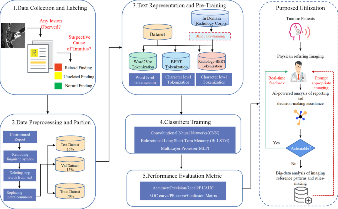
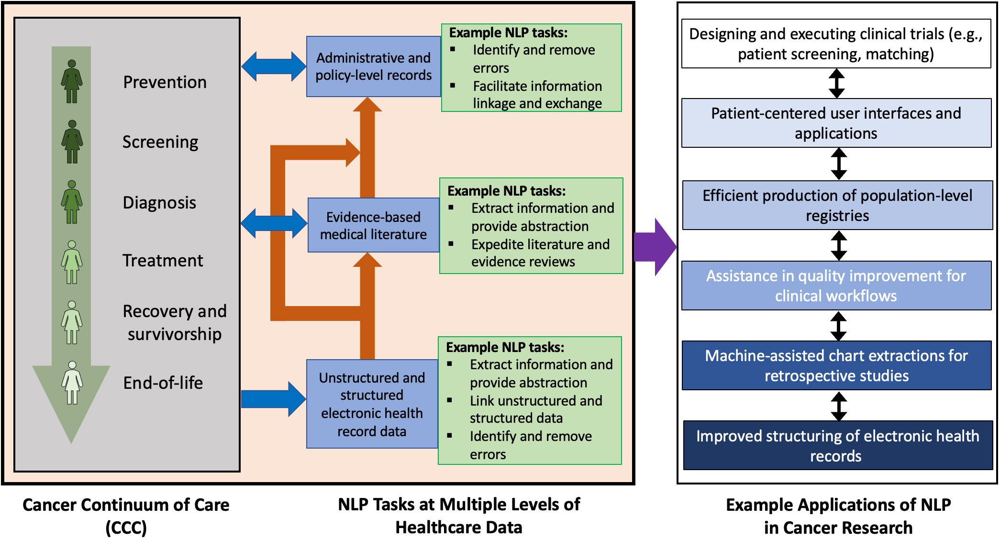
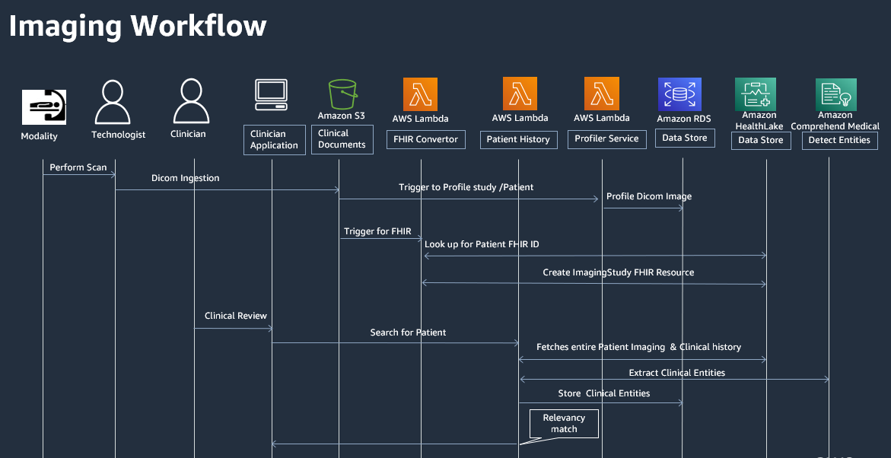

交互式报告结构化体验
通过以下交互式演示，您可以体验如何将传统自由文本的放射学报告转换为基于SNOMED CT的结构化格式。您可以看到每个临床发现是如何被标准化编码的，以及结构化后的数据如何被计算机系统理解和利用。
案例1: 胸部CT报告结构化
本案例展示了一份胸部CT肺结节随访报告的结构化过程。请点击报告中的关键发现，查看其SNOMED CT编码。
原始自由文本报告
检查：胸部低剂量CT平扫
临床信息：肺结节随访
技术参数：螺旋CT，层厚1mm，间隔0.8mm，管电压120kV，自动管电流调节
检查结果：
右上肺可见一枚类圆形结节，大小约8mm×7mm，边缘略呈毛刺状，CT值约45HU，较3个月前（6mm×5mm）略有增大。
右下肺见一枚磨玻璃样结节，直径约5mm，边界清晰，与3个月前大小无明显变化。
双肺未见其他明显异常密度影。纵隔内未见明显肿大淋巴结。心脏、主动脉形态及大小未见明显异常。
结论：
1. 右上肺实性结节，较前增大，考虑恶性可能性大，建议进一步PET-CT检查评估和肺科会诊。
2. 右下肺磨玻璃样结节，考虑炎性或早期病变，建议3个月后复查胸部CT。
结构化报告视图
检查信息
结节 #1
结节 #2
其他所见
诊断与建议
SNOMED CT 概念详情
点击上方报告中的蓝色术语查看其SNOMED CT编码详情
概念表达式
// 点击术语查看其SNOMED CT表达式
案例2: 脑部MRI报告结构化
本案例展示了一份脑部MRI脑胶质瘤检查报告的结构化过程。请点击报告中的关键发现，查看其SNOMED CT编码。
原始自由文本报告
检查：脑部MRI增强扫描
临床信息：反复头痛、短暂记忆障碍3个月，疑似脑肿瘤
技术参数：1.5T MRI，T1WI、T2WI、FLAIR、DWI、增强扫描序列
检查结果：
右侧颞叶见一不规则异常信号病灶，大小约4.2cm×3.8cm×3.5cm。T1WI呈低信号，T2WI及FLAIR呈高信号，DWI显示部分弥散受限。边界不清晰，周围可见明显水肿带。
增强扫描显示病灶不均匀强化，内部可见斑片状未强化区，考虑为坏死区域。
病灶向右侧侧脑室前角局部压迫，但无明显中线结构移位。脑室系统大小正常。
幕上及幕下其他脑实质未见明显异常信号。脑膜未见明显异常强化。
结论：
右侧颞叶不规则异常信号病灶，边界不清，不均匀强化，符合高级别胶质瘤影像表现，考虑胶质母细胞瘤可能性大，建议神经外科会诊并考虑立体定向活检明确诊断。
结构化报告视图
检查信息
主要发现
增强特征
影响与并发症
其他所见
诊断与建议
SNOMED CT 概念详情
点击上方报告中的蓝色术语查看其SNOMED CT编码详情
概念表达式
// 点击术语查看其SNOMED CT表达式
案例3: 腹部超声报告结构化
本案例展示了一份腹部超声检查报告的结构化过程。请点击报告中的关键发现，查看其SNOMED CT编码。
原始自由文本报告
检查：腹部超声检查
临床信息：右上腹不适3周，加重2天
检查结果：
肝脏：肝脏大小正常，轮廓规则，实质回声均匀，未见异常病灶。肝内胆管未见扩张。
胆囊：胆囊大小正常，壁厚度正常，内可见多个强回声团块，最大者约1.5cm，伴声影，随体位改变而移动。
胰腺：胰腺大小正常，轮廓规则，回声均匀，未见明显异常回声。胰管未见扩张。
脾脏：脾脏大小正常，轮廓规则，回声均匀，未见异常病灶。
肾脏：双肾大小正常，轮廓规则，皮髓质分界清晰，实质回声均匀，未见异常病灶。集合系统未见扩张。
主要血管：腹主动脉、下腔静脉显示清晰，走行通畅，未见明显异常。
腹腔未见明显积液。
结论：
多发胆囊结石，建议外科会诊，结合患者症状考虑治疗方案。
结构化报告视图
检查信息
肝脏
胆囊
其他器官
诊断与建议
SNOMED CT 概念详情
点击上方报告中的蓝色术语查看其SNOMED CT编码详情
概念表达式
// 点击术语查看其SNOMED CT表达式
结构化报告工作流程演示
以下是一个交互式演示，展示医学影像诊断报告从采集到结构化的完整工作流程。通过点击下方按钮可以逐步查看流程的每个环节。
-
1影像采集
-
2初步分析
-
3结构化录入
-
4SNOMED编码
-
5存储与共享
-
6临床应用
1. 医学影像采集
工作流程首先从医学影像设备(如CT、MRI、超声等)进行检查，并将原始影像数据传输到PACS(医学影像存档与通信系统)。这些原始数据包含DICOM头信息，其中一些信息如检查类型和部位已可用于后续的结构化。

2. 放射科医师初步分析
放射科医师访问PACS系统，查看患者的影像学检查，进行专业分析和初步诊断。传统上，医师会口述或键入自由文本形式的报告，这种格式虽然灵活但缺乏标准化。

3. 使用结构化模板录入
医师使用针对特定检查类型的结构化报告模板，将发现记录为预定义的数据元素，而不是自由文本。这种模板式录入确保了报告的完整性和一致性，且不会遗漏关键信息。

4. SNOMED CT自动编码
系统自动将录入的结构化数据映射到对应的SNOMED CT概念，为每个临床发现分配唯一的概念ID。对于自由文本部分，可以使用自然语言处理(NLP)技术提取关键概念并映射到SNOMED CT。

5. 标准化存储与共享
编码后的结构化报告以标准格式(如HL7 CDA或FHIR)存储，并可安全地跨系统和机构共享。这种标准化格式使得数据可以被各种临床系统理解和处理，而不仅仅是放射信息系统(RIS)。

6. 临床应用与二次利用
最终，结构化的报告数据可以被医疗机构的各种临床系统利用，从电子病历和临床决策支持系统到医学研究和质量改进项目。结构化数据还可以用于训练人工智能模型，进一步提升医学影像诊断的准确性和效率。